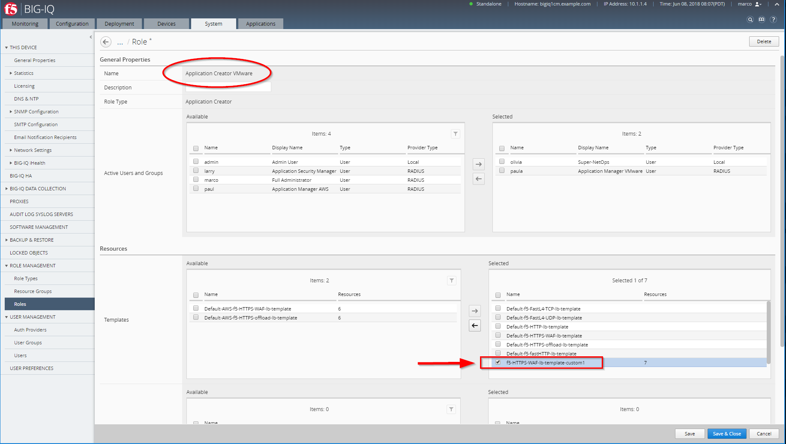

F5 BIG-IQ & Cloud Edition Lab > Class 1: BIG-IQ Application Management and AS3 (Cloud Edition) > Module 2: BIG-IQ Application Templates & Deployment (Service Catalog) Source | Edit on
Lab 2.2: Create custom security policy & Application Service Catalog Template¶
Warning
Starting BIG-IQ 6.1, AS3 should be the preferred method to deploy application services through BIG-IQ.
Connect as larry
Create the custom ASM policy, go to Configuration > SECURITY > Web Application Security > policies.
{kind=link}
Select the f5-asm-policy1 ASM policy from the list and look through its settings. Notice the policy is in Transparent mode.
Edit the Policy f5-asm-policy1, notice the leaning mode is set to manual. Above Learning Mode select Make available in Application Templates, click Save.
{kind=link}
Note
If you want the client IP/Country visible in the Security Analytics, set Trust XFF Header to Yes (if not already set)
Go to POLICY BUILDING > Settings and set Learning Mode to Automatic, Policy Building Mode to Central and Auto-Deploy Policy to Disable click Save & Close.
{kind=link}
Note
f5-asm-policy1 is based of templates-default policy. The intent for the initial release 6.0 was to be able to push a basic (negative only) security policy that can provide a basic level of protection for most applications.
For 6.0, it is recommended that learning shouldn’t be enabled with app templates – it should be a fundamental policy.
However, if you want to use learning/blocking mode, you will need a dedicated app template per application.
Connect as david (or marco)
1. Create a Clone of the Default-f5-HTTPS-WAF-lb-template policy, go to Applications > SERVICE CATALOG, and click on Clone.
Enter the name of your cloned template: f5-HTTPS-WAF-lb-template-custom1.
{kind=link}
Then select the ASM policy
f5-asm-policy1``and the Logging Profile ``templates-defaultin the SECURITY POLICIES section on both Virtual Servers (Standalone Device).
Warning
The virtual servers within the same application have to use the same ASM policies. Therefore, the ASM policy attached to the 1st virtual server will apply to ALL the virtual servers automatically.
{kind=link}
Save & Close

[New 6.0.1] Publish your custom template after creation.
{kind=link}
4. In order to allow Paula to use the custom application template, go to : System > Role Management > Roles and select CUSTOM ROLES > Application Roles > Application Creator VMware role (already assigned to Paula). Select the Template f5-HTTPS-WAF-lb-template-custom1, drag it to the right.
{kind=link}
Click on Save & Close